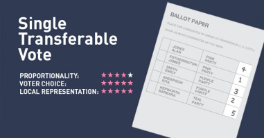
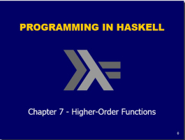
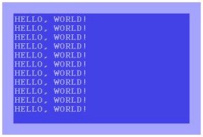
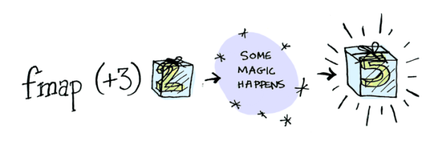
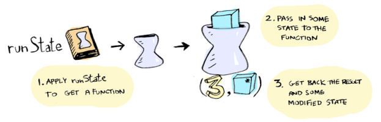
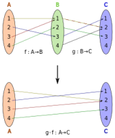
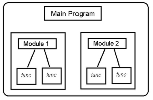

Assignments in Haskell
Details of Programming Assignment
Assessment
Introduction to Functional Progamming and Haskell
Introduction
Links
First Steps in using GCHi and Haskell
First Steps
Exercises on First Steps
Lab-01
Introduction to Types and Classes
Types and Classes in Haskell
Exercises Types and Classes in Haskell
Lab-02
Lab-03
Defining Functions
Defining Functions in Haskell
Exercises on Functions
List Comprehensions
List Comprehensions
Example using List Comprehensions
Example using List Comprehensions
Exercises on List Comprehensions
Recursive Functions
Recursive Functions
Exercises on Recursive Functions
Higher Order Functions
Higher Order Functions
Exercises on Higher-order Functions
Exercises on foldr
Lab-04
Lambda Calculus
Notes on Lambda Calculus
Slides on Lambda Calculus
Exercises on Lambda Calculus
Declaring Types and Classes
Declaring Types
Exercises on Type Declarations, Trees
Lab-05
Interactive Programming
Interactive Programming
Exercises on Interactive Programming
Functors, Applicatives and Monads
Functors and Applicatives
Monads
Exercises on IO, Functors and Monads
State Monads
Lazy Programming and DSLs
Lazy Programming and DSLs
Bits and Pieces
Function Application $ and Function Composition .
Modules in Haskell
Lab-06
Functional Programming using Haskell
All slides's in Module
Details of Programming Assignment

Introduction
First Steps
Exercises on First Steps
Types and Classes in Haskell
Exercises Types and Classes in Haskell
Defining Functions in Haskell
Exercises on Functions
List Comprehensions
Example using List Comprehensions
Example using List Comprehensions
Exercises on List Comprehensions
Recursive Functions
Exercises on Recursive Functions
Higher Order Functions

Exercises on Higher-order Functions
Exercises on foldr
Notes on Lambda Calculus
Slides on Lambda Calculus
Exercises on Lambda Calculus
Declaring Types
Exercises on Type Declarations, Trees
Interactive Programming

Exercises on Interactive Programming
Functors and Applicatives

Monads
Exercises on IO, Functors and Monads
State Monads

Lazy Programming and DSLs
Function Application $ and Function Composition .

Modules in Haskell
